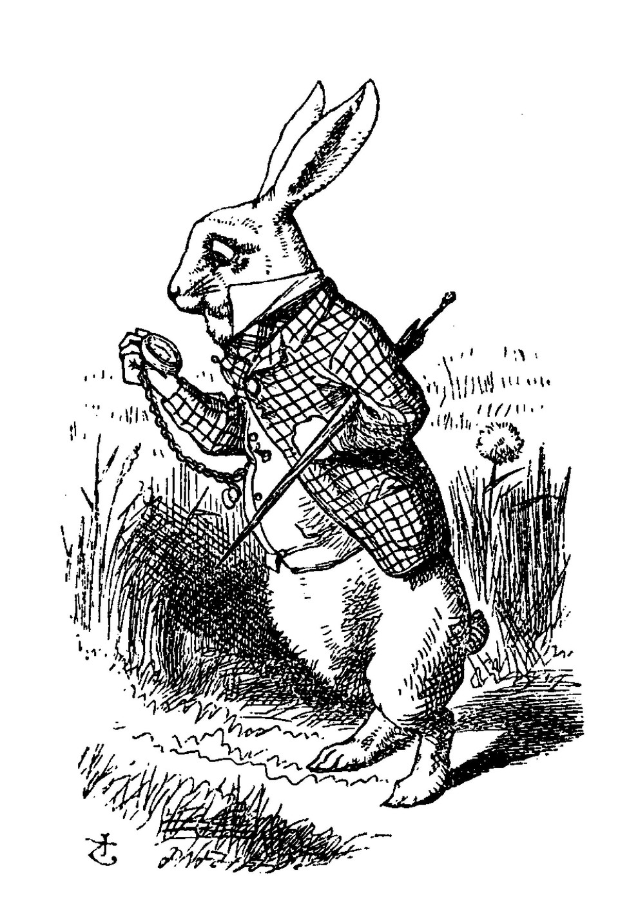
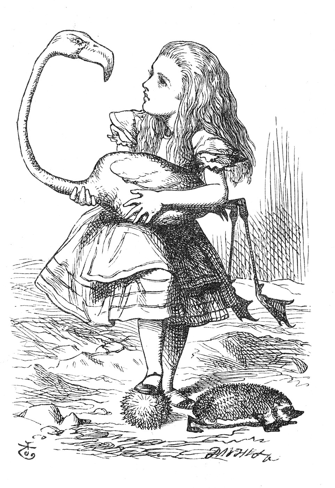

after John Tenniel’s drawings for Lewis Carroll’s Alice’s Adventures in Wonderland, 1865

John Tenniel drew forty-two pictures for Lewis Carroll’s Alice’s Adventures in Wonderland (1865), and the Brothers Dalziel cut them in wood. You have just run through six of them, in a world drawn the same way.
From the book: the White Rabbit with his watch, the fall past cupboards, book-shelves, maps and pictures, the jar of ORANGE MARMALADE put safely in a cupboard, the hall of locked doors, the glass table and the little golden key, DRINK ME, EAT ME, the Rabbit’s gloves and fan, the Cheshire Cat, the tea-party, the tree with a door in it, the gardeners painting the white roses red, the Queen of Hearts and her croquet-ground, with flamingoes for mallets, hedgehogs for balls and soldiers for arches. Everything anybody says is Carroll’s own words.
The game’s own: the gold sovereigns, the shelves to dodge, the bench across the hall, the bouncing mushrooms, helping to paint the roses, and the short cut through the little door: in the book Alice loses the key again and comes back to the hall, by the door in the tree, before she reaches the Queen’s garden.
Why a yellow dress? Tenniel’s 1865 pictures are black and white, so they do not say. When he coloured them himself for The Nursery “Alice” (1890) he gave her a yellow dress, a white pinafore and blue stockings. The famous blue dress came later.
Pictures: John Tenniel (died 1914), public domain, from scans of the 1869 German edition on Wikimedia Commons. Words: Lewis Carroll (died 1898), public domain, from Project Gutenberg.